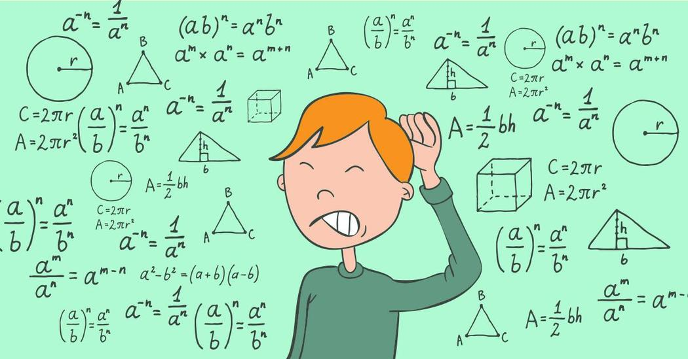
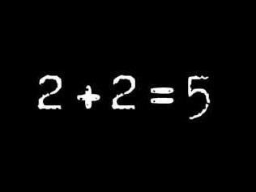

Math, whether we hate it or love it, it is an essential skill we all need. It occurs so often; you probably don't realize you're using the fundamentals of Math. We use it in our daily lives to help efficiently perform tasks. We've developed and advanced Math with the contributions of some talented minds that you may know. Also, the origin and history of Math are extremely interesting and debatable. It has been around since the first generation of men and still proves to be an essential skill today. Now when some people do Math their brains explode and it looks something like this.
Or it could look something like this.
We all had that moment at one point, but honestly, it's not that hard once you get the hang of Math. Math is using logical approaches to solve obstacles, whether it's through patterning, algebra, number theory, etc. But you might think I don't really need Math, it's just a waste of my time. We use Math in our everyday lives and you can click here for more information. Math has its benefits too. It allows you to perform better and faster calculations. It also increases your endurance for stress and pressure. It also sharpens concentration and observance, teaches clearer logical reasoning, etc. These benefits can be implemented in other real-life applications.